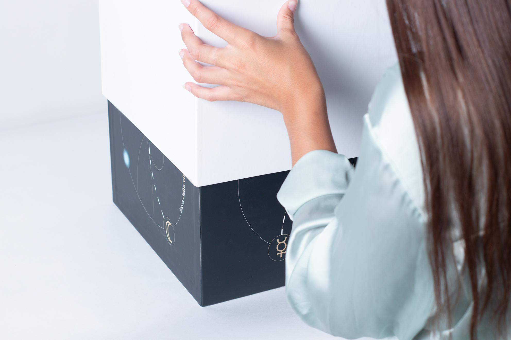
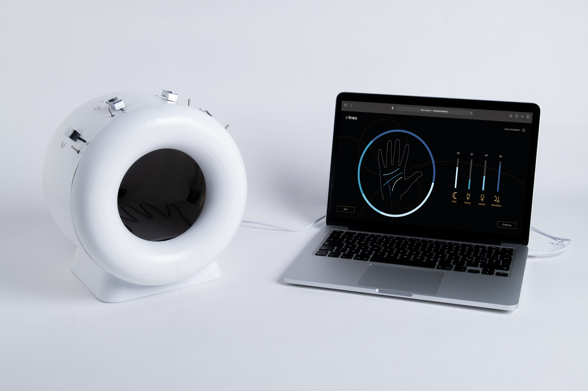
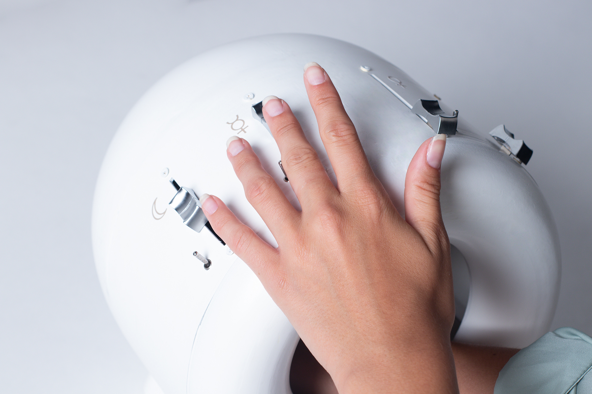
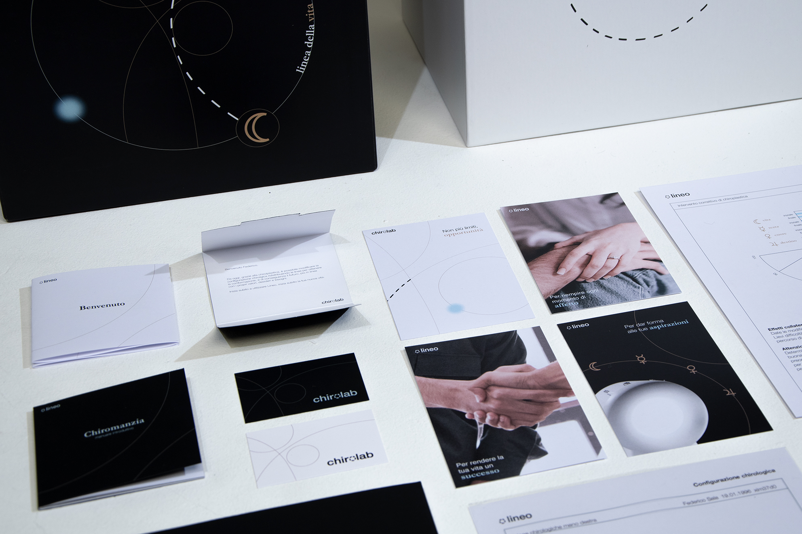

LINEO
A RETAKE ON SUPERSTITION
clinicachirolab.it
E se fosse possibile modificare
chirurgicamente il proprio futuro?
chirurgicamente il proprio futuro?
A CURA DI
Dorotea Anfossi
Michela Brambilla
Michela Brambilla
Simone Cerea
Andrea Corsini
Andrea Corsini
Alessandro Pedriali




Politecnico di Milano
Design della Comunicazione
Lab. di Sintesi Finale sez. C1
A.A. 2020-2021
Design della Comunicazione
Lab. di Sintesi Finale sez. C1
A.A. 2020-2021
PROFESSORI
Francesco Ermanno Guida
Pietro Buffa Di Castelalto
Francesco Ermanno Guida
Pietro Buffa Di Castelalto
Alessandro Masserdotti
Giacomo Scandolara
Giacomo Scandolara
CULTORI DELLA MATERIA
Marcello Biffi
Alberto Candido
Marcello Biffi
Alberto Candido
Michele Invernizzi
Andrea Pronzati
Claudia Tranti
Andrea Pronzati
Claudia Tranti